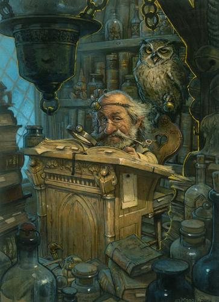
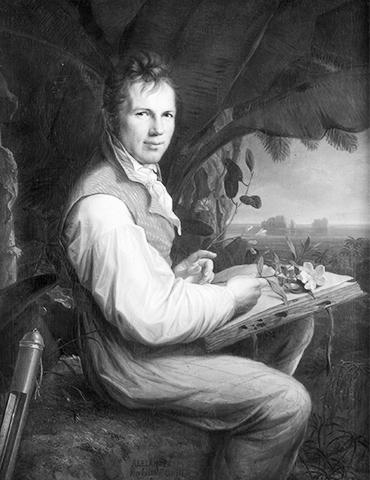

There are explorers and there are innovators. There are people who investigate the world and there are those who push the limits and create. What I do is explore. I’m not pretending to do anything new. I’m not trying to create the next big thing. I simply want to search and examine and appreciate what I’ve found.
Our society has tried to convince us that innovation is the only appropriate path. While that is true in order for our society to progress – and I, too, believe it is necessary – I also believe that there is a place for those who are the “support group” for the innovators.
People like me find pleasure in recreating what others have developed. We like to play and tinker. What we do is exhaustively examine what the innovators have developed; poke and prod it, bend and twist it, and view it from every conceivable angle, thereby testing the thing and stretching it to its very limits. Sometimes this leads to new ideas, but more importantly, it produces products that are so much more robust than originally conceived.

That’s the practical benefit, but I’m not going to lie to you and say that’s why I do what I do. No. I do what I do because I love it. I tinker because there is an innate desire in me to take things apart, learn how they work, put them back together, then modify them to make them my own. I’ll build my own castle in the sandbox but it probably won’t be anything groundbreaking. But you better believe I’ll be exploring the nooks and crannies of the most intricate structure on the other side of the box though…
I’ll measure it and take details notes of it and capture pictures from every perspective because appreciation is fundamentally necessary. What would be the use of the latest invention if it were simply tossed aside and forgotten? I may not be original, but there’s something to be said for my unwavering devotion to creation, whether it be natural or man-made.

We’ve become a paper plate society, using admirable things up then throwing them away in search for the next new thing. How about recognizing and being grateful for what we already have? If it ain’t broke, fix it if you want… but at least acknowledge the design for its ingenuity.
I’m all for pushing the envelope, and I completely understand that we wouldn’t have what we have today if it weren’t for the innovators. Honestly, I thank them wholeheartedly. But some of us just aren’t cut out for that. It takes a special type of person. I’ll gladly give them all the credit they deserve and then some. But I’m also glad to be one of the people who can fully appreciate the exotic and the mundane, the sleek and shiny and the dull and worn, the complex and the simply elegant. I think the world can use a few more of us who can slow down and and take the time to marvel at what we already have.